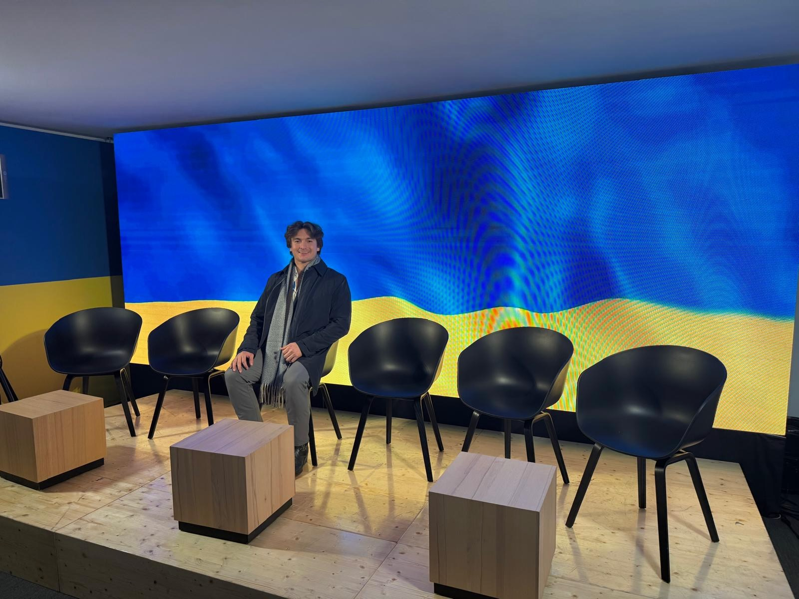
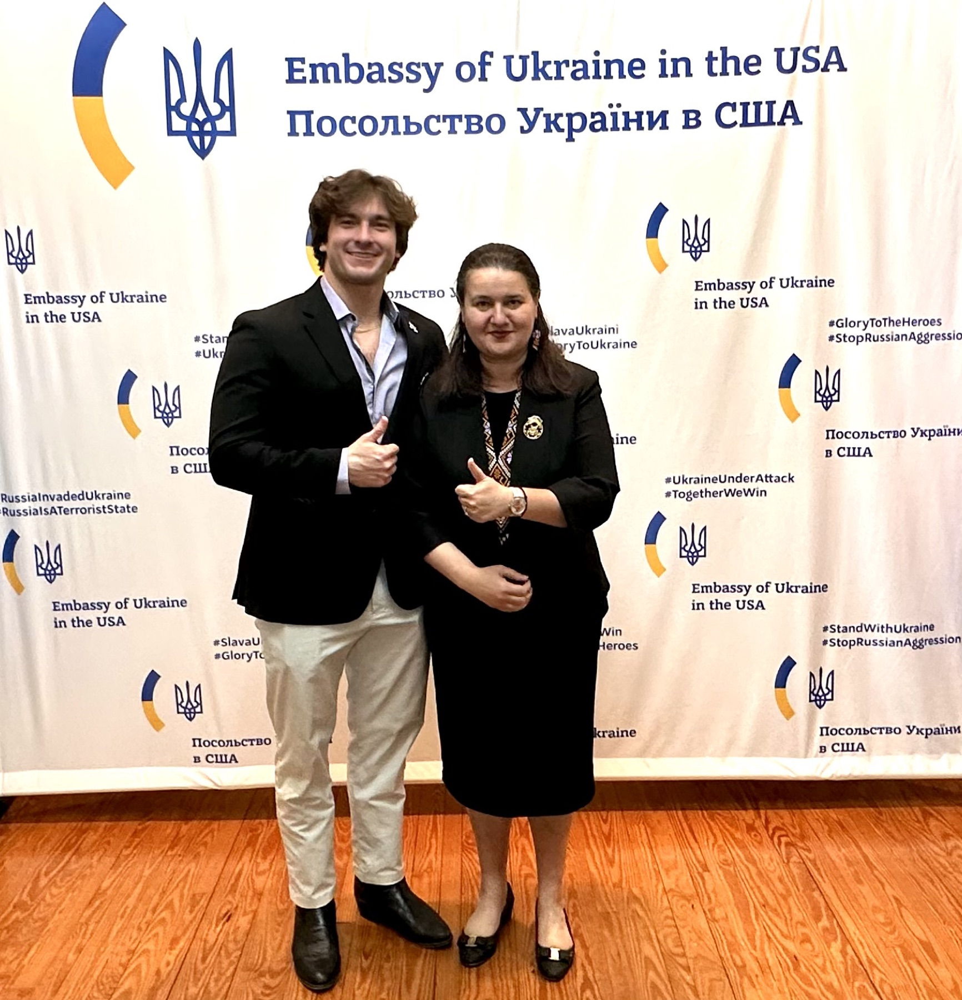
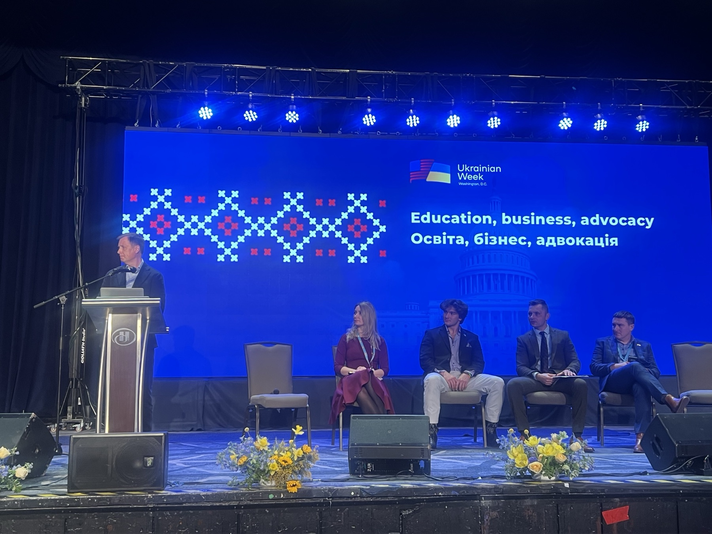
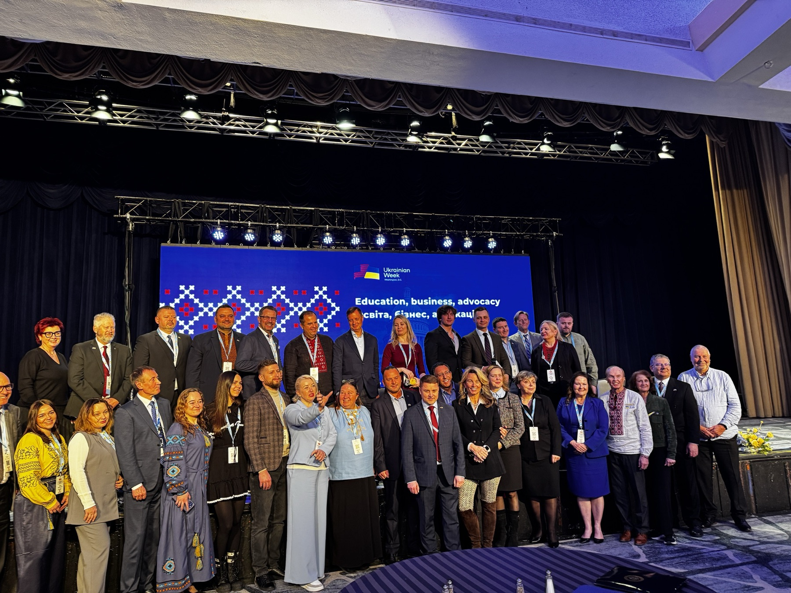
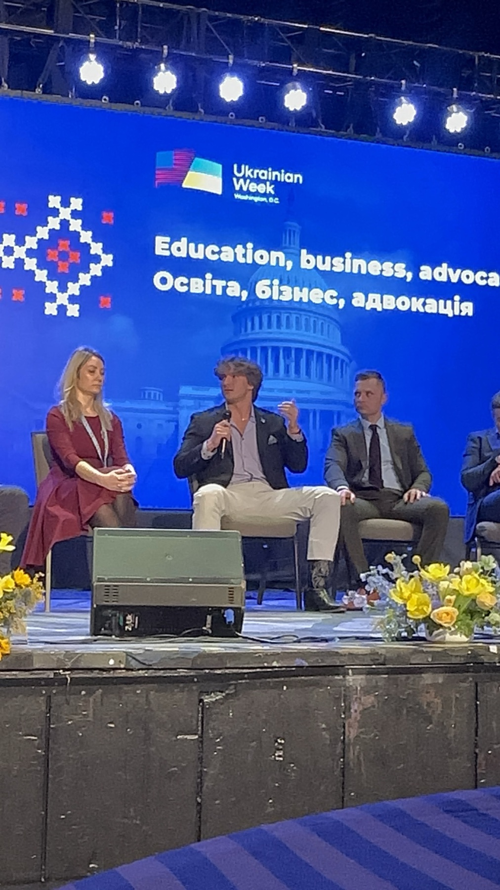

"The problem really is attention. Our goal on campus is to bring Ukraine from the background back into the forefront of people's minds."


Raising money was only half of Students Supporting Ukraine's work. The other half was carrying the story — of the kids in Ternopil, of the school in Kyiv — into the rooms where decisions about Ukraine get made.
The most important of those rooms was the Ukrainian Prayer Breakfast in Washington, D.C., held during Ukrainian Week — a gathering of American and Ukrainian leaders across faith, business, and government. I told S.S.U.'s story from the stage as part of the "Education, business, advocacy" panel, then carried it to the Ukrainian Embassy: what grassroots dollars had built, and what Ukraine's children still needed.



The story traveled further, too — to the stage of Ukraine House at the World Economic Forum in Davos in January 2025. And in July 2025 I returned to Kyiv as Executive Intern to the CEO of Kyivstar — Ukraine's first NASDAQ-listed company — studying how its leaders run Ukraine's largest telecom through wartime.